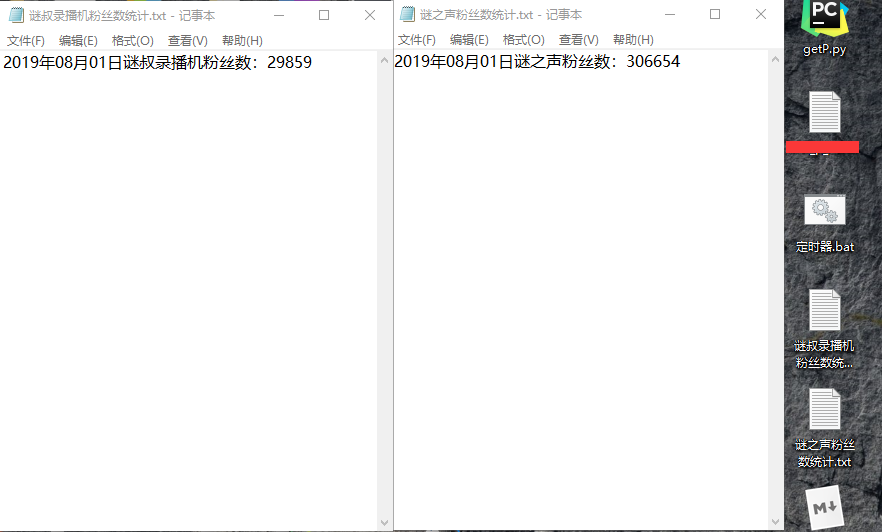

目录
为了方便，这里我把它写成了一个函数
import requests as reqfrom time import strftime, localtime接收两个参数，分别为up主的mid和自定义名字，mid就是up主个人空间网页地址栏最后的那串数字。没有自定义名字的话，会自动显示成mid的，这点不用担心哦~
def fans(mid, name=-1):
mid = str(mid)
name = str(name)
if name == -1:
name = mid
url = "https://api.bilibili.com/x/relation/stat?vmid=" + mid + "&jsonp=jsonp"
resp = req.get(url)# 通过url爬取到我们想要的json数据
info = eval(resp.text)
with open(name + '粉丝数统计.txt', 'a') as f:
f.write(strftime("%Y", localtime()) + "年" + strftime("%m", localtime()) + "月" + strftime("%d",
localtime()) + "日" + name + "粉丝数：" + str(
info['data']['follower']) + '\n')# 获取data中的follower就是粉丝数啦
print(strftime("%Y", localtime()) + "年" + strftime("%m", localtime()) + "月" + strftime("%d",
localtime()) + "日" + name + "粉丝数：" + str(
info['data']['follower']) + '\n')if __name__ == "__main__":
fans(36874384, '谜叔录播机')
fans(673816, "谜之声")
每当0点的时候就会自动执行一遍python文件哦~我给它起名叫'定时器.bat'，不用忘记一直挂着它，嘻嘻~
if 0 equ %time:~0,2% (
python getP.py
)
timeout 3600很简单哦，大家都可以去试试，统计一下自己喜欢的up主的粉丝量变化，相信一定是一个增函数吧嘻嘻~
当然也可以不局限于每天监测一次，不过更具体地就需要大家自己去试啦，我只做了一天统计一次的~